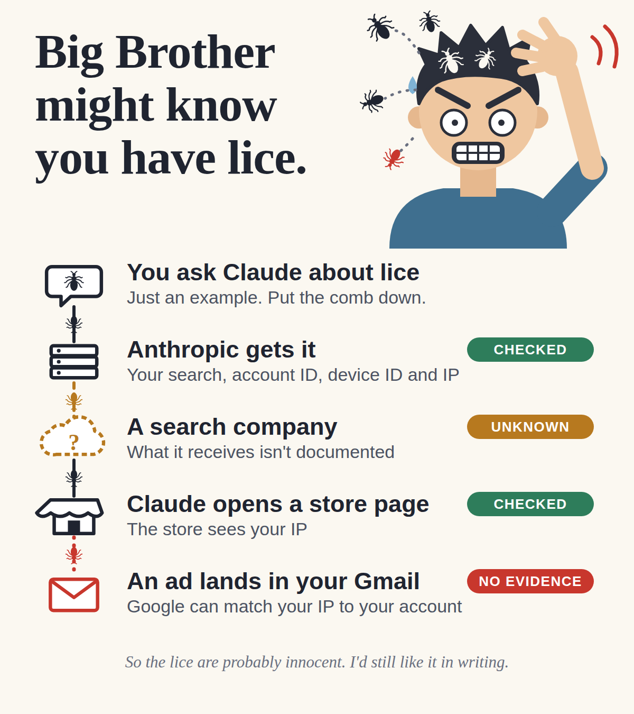

Big Brother might know you have lice

Google just had its worst stock day ever, down about 13% on Thursday, roughly $500 billion gone. Some of that is a profit miss and AI spending, and Google blames currency first for slower search. But queries grew the fastest in five years while search revenue growth slowed to 12%, and its chief business officer said AI Mode had an impact "because of the lower monetization we were seeing in AI Mode."
More people asking an AI, less money per question. My guess is that every ad now has to work harder, and that makes knowing exactly who you are worth more.
Big Brother might know you have lice.
Say you ask Claude about lice. Just an example. Put the comb down. A week later a lice shampoo pitch lands in your inbox. Did the chat do that? I can't prove it did, and I can't rule it out.
I logged one Claude Code search. Your search text goes to Anthropic with your account ID and device ID, and Anthropic sees your IP. What the search company gets after that isn't documented anywhere I could find.
Turning off training has nothing to do with how your IP address gets out. Nothing. That setting covers training and how long chats are kept. When Claude Code opens a store's page, the store sees your IP with training on or off. Anthropic's policy says it "may receive and disclose" personal data "with service providers and business partners", IP address included, and it doesn't say the toggle changes that. It also says Anthropic does not "sell" your data as the law defines that.
Now add Google. Its ad tools accept uploaded IP addresses and can match one to the last known user, and Google has seen you read Gmail from that IP. So a store could upload a list of visitors, and you'd get an ad in Gmail that looks like an email, with a small "Sponsored" label and no address needed. Google wants at least 100 active users on a list and bars this for health products, assuming lice shampoo counts and nobody files it under pest control. I found no evidence of it happening here.
So the lice are probably innocent. I'd still like it in writing.
Google's own note on IP uploads, version 1.7: developers.google.com/data-manager/api/reference